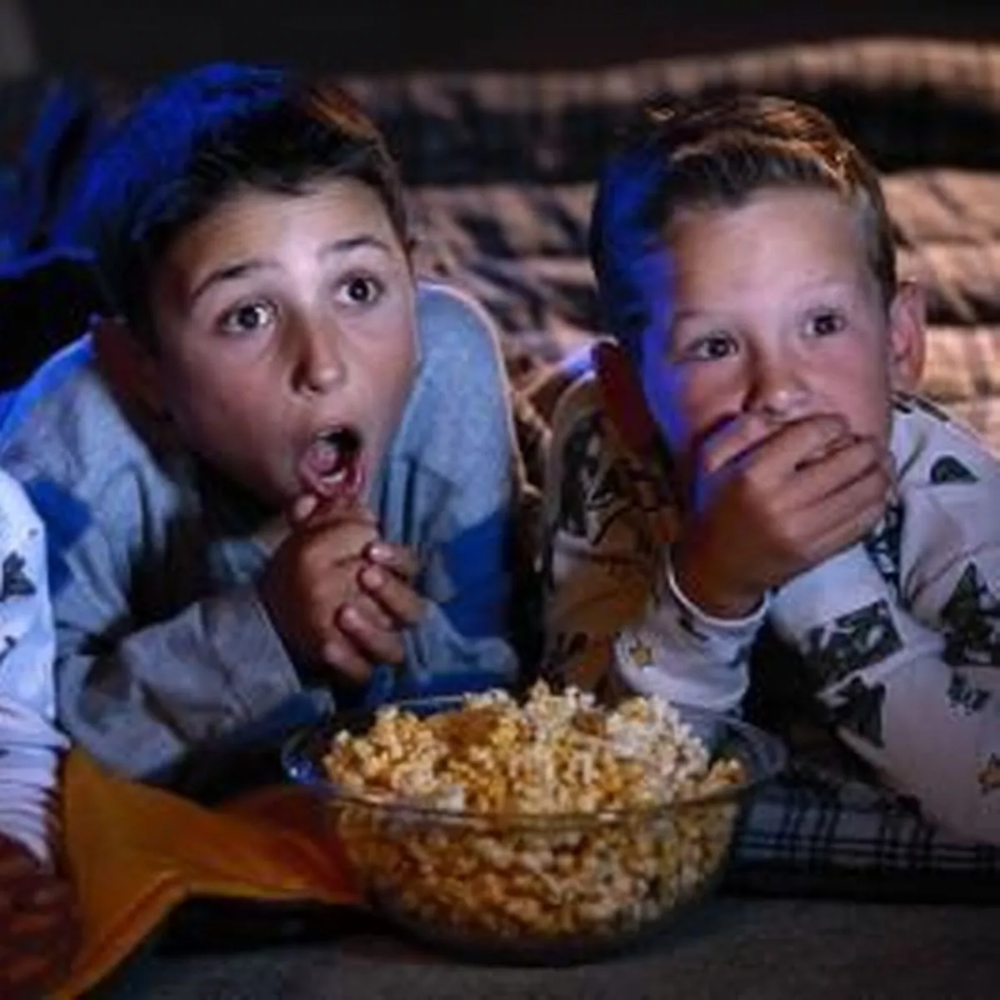
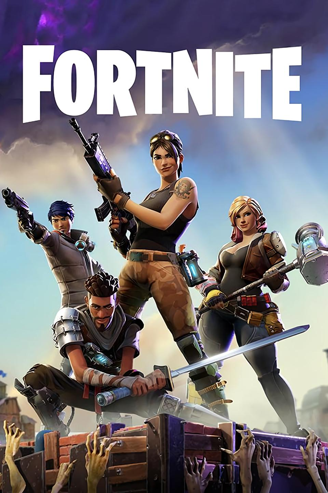

Sleepover
Splash!! Me and my friend were at the pool, and were having fun, until we had an idea of the sleepover. We asked our parents and they said yes. So, we decided to do it at my house, and he would come after he got ready. After an hour, he came and we went to my friend’s house to play a game called 4 square. But before we played, we went to Sid’s house to call him, and he said he would come. After that we went to Sid’s house again, and we just talked outside, until we heard something.
We all heard the sound of footsteps, and immediately ran inside. After that me and Sam(guy at pool) went home totally scared and freaked out. We decided to watch some TV. But we heard more noises. Everyone was asleep except us. So, we took Nerf guns, some bats, some toys that hurt when you step on it. It was 10 pm and we were planning to take the toys and put it near the stairs. And for 5 minutes we just stood out of view, ready to shoot them with the Nerf gun. But we got tired and just sat in bed. We had a little bit of story time. Then we slept with our eyes half closed. We woke up in the middle of the night to get a snack, and rushed upstairs because we heard a sound again, but realized we made a mistake.
The sound was upstairs with us. We tried to relax and had another story time. After 2 stories we decided to sleep and we will be fine. We slept and woke up in the morning perfectly fine. After we had breakfast, we went to play some basketball, and his mom came to pick him up. He put on his shoes and went. Although it was scary, we still managed to have fun.
AUBI
Aubi. The worst person to ever live, so there was this one time, Aubi was in my class, and he constantly kept taking the tissues from the box. Everyday he would finish one box. At this point, the teacher was frustrated, and told him to step outside. Everyone started to giggle. As he and the teacher stood outside, the whole class started to talk and laugh. The teacher came in and everybody immediately quieted down. “Who started talking?” the teacher roared. There were a bunch of murmurs, but the class finally said, “It was Arun.” She was an innocent boy who did nothing, and everybody blamed it on him except me. Aubi finally came back in, with a nose filled with snot, and took 1 big blow. KRRRRRT!

Aubi was a menace to society. When he came into class, he brought 3 boxes of tissues. Each tissue was loud. KRRRRRRRRRRRRT!! Stop they said, but he wouldn’t. He was unstoppable just like Thanos, but 1000000x better. The whole school feared him. He was a hero to many. A villain to some. I asked him one day if I could have his number, and he said yes. I took the note and showed it to many people, and Aubi was soon shocked to see the messages. I’m a huge fan they said. I also said that. But at this point, he was the most popular kid. On the first day of school, I sat next to him and immediately knew he was a menace. I soon started to realize he wasn’t just a menace; he was THE menace. At one point, me and some other people met to talk about him, about how we could stop him. Until we made a conclusion, he was invincible.
The way he sneezed was just different. Every time Aubi put his nose on the tissue he was outside of the classroom. One time, I took his phone for all of science class, and he was panicking so much he told everybody, including me, to find his phone but no one volunteered sadly. After class I secretly put the phone in his backpack, and the next day came up to me and said “I found my phone, it was in my backpack the whole time.” I told him all about what happened. But he didn’t care, he was just happy to have his phone back. So as you can see, he’s a menace.
Go to Top
Howdy Modi
It was September 22nd, 2019. The day Donald Trump and PM Modi would come to NRG Stadium in Houston, TX. Our family was really excited to see both of these great people, so we got ready and went to the NRG Stadium. There we saw thousands of Americans and Indians sitting all around the stadium. We tried to find the closest seat to the special guests, but the closest we found was a little far from them, but we could see both of them perfectly fine. Then it started.
Donald Trump started with a speech about India and America’s friendship, and how we will improve our friendship and the way Trump said we are committed to helping the world together. Modi had a wonderful speech about the same and how much grateful he is to America and India. Modi talked about how both countries can build up, and how we could become powerful partners.

After Modi’s speech ended, he gave everybody a goodbye. So did Donald Trump. After the goodbyes, we left the stadium to go home, all thinking we should have got Modi and Trump’s signature!
Go to Top
Fortnite
It was Thursday, me and my friend were playing Fortnite, round after round we kept losing. We still played hoping to win, one match we even got 4th place! But we still wanted to win…. HONK HONK! We are in the Battle Bus, we drop at Brutal Baston, I get some weapons while he goes to get heals. I give him some weapons and he gives me some heals. Now we go to Slappy Shores, but I see something…
KABOOM!! There’s people! I shoot them with my weapons, one is knocked, my friend gets the other guy. “That was a close one!” There’s 12 people left. I see one far away, so I use a long range weapon and eliminate him. 11 people left. “I guess he had no teammate,” I said. My friend agrees. There’s 6 people left. We run because the storm is chasing us. We had to the storm circle where it is all fine. But all of the sudden we get shot at. So we build a box and heal with our heals. I pulled out my flare gun which can track and found out they were right outside! I edited the wall, placed a ramp, boxed him up, edited the ramp, and pumped him in the head. He was knocked. His teammate was still alive. But the teammate knocks my friend! I do the same thing I did to his knocked teammate , and it worked!
I revive my friend and we head for the storm circle. There’s 4 people left, us and 2 others. I see them on a cliff healing. I pull out my long range weapon and somehow hit him! He was knocked and his teammate was reviving him! But I had an idea. Since the storm is close to them, I will throw a shockwave and that will eliminate both of them. It was my chance. I threw… and it landed perfectly on them!! They lost, we won. The first #1 Victory royale of the day!